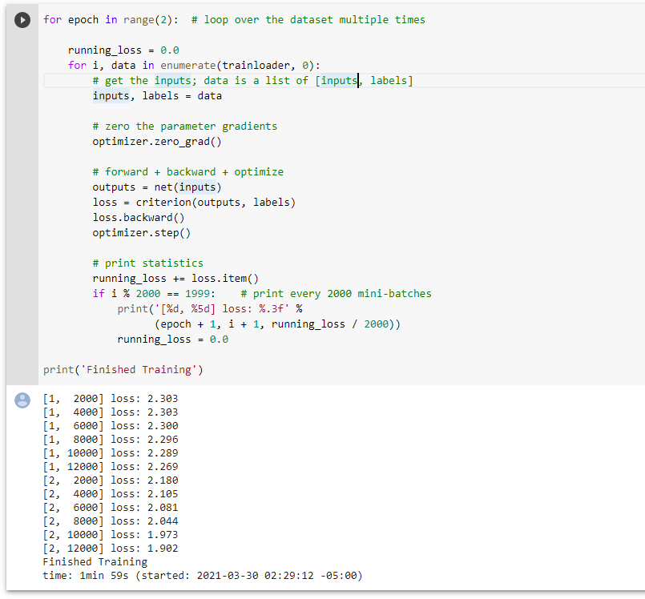
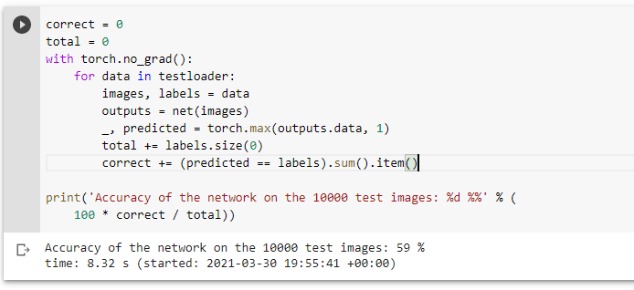
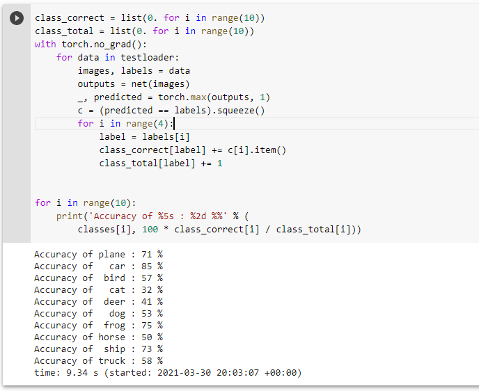
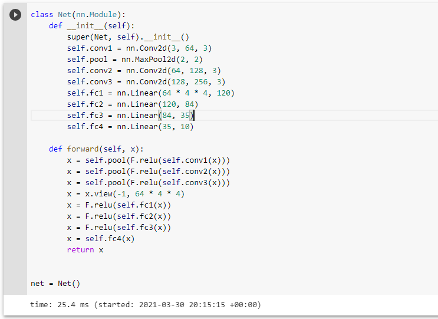
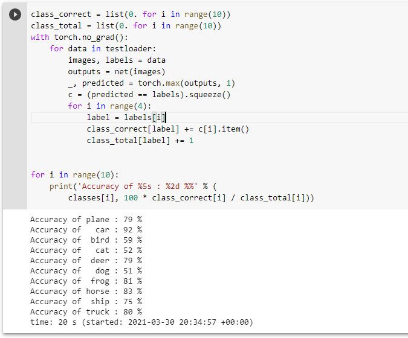

CIFAR - 10 Image Classifier
Github
Introduction
The CIFAR-10 dataset consists of 60000 32x32 colour images in 10 classes, with 6000 images per class. There are 50000 training images and 10000 test images. The dataset is divided into five training batches and one test batch, each with 10000 images. The test batch contains exactly 1000 randomly-selected images from each class. The training batches contain the remaining images in random order, but some training batches may contain more images from one class than another. Between them, the training batches contain exactly 5000 images from each class.
In this blog we will use PyTorch to construct a convolutional neural network. We will then train the CNN on the CIFAR-10 data set to be able to classify images from the CIFAR-10 testing set into the ten categories present in the data set.
Image Classifier with 75% accuracy(Best accuracy obtained)
- Changes made:
- Changed the epoch value to 10.
- Added 1 convolutional layer so there are 3 convolutional layers in total.
- Added 1 fully connected layer so that is 3 fully connected layers in total.
- convolutional layer values are (3, 64, 3), (64, 128, 3), (128, 256, 3).
- First fully connected layer input values updated to 64*4*4.
- Install this to show runtime
- $ pip install ipython-autotime
- i. Import libraries and initializing runtime.
- ii. Load train and test dataset using torch and torchvision.
- iii. Sample training images output.
- iv. Define a neural network with 3 convolutional layer and a max pool of 2x2 dimension and 4 fully connected layers which adds more depth to the network and helps in increasing the model accuracy
- v. Defining loss function and optimizer. Using Classification class entropy loss function is used to adjust model weights during training and SGD optimizer with momentum
- vi. We train the network with the data and epoch 10 to get reduce the loss value as much as possible.
- vii. Save the training model.
- viii. Test the network on the test data
- We have trained the network for 2 passes over the training dataset. But we need to check if the network has learnt anything at all. We will check this by predicting the class label that the neural network outputs, and checking it against the ground-truth. If the prediction is correct.
- ix. Loading back the saved model and testing the outputs
- x. The outputs are energies for the 10 classes. The higher the energy for a class, the more the network thinks that the image is of the particular class. So, we get the index of highest energy
- xi. Network accuracy for the whole dataset on the 10000 test images.
- xii. Checking which classes performed well.
- Network accuracy obtained after making the above changes with SGD optimizer 75%
Experiments
1. Trying different Optimizers
- 1. SGD
- SGD at epoch 2 the loss function run time was 1min 58sec and gave an accuracy of 55%
- 2. Adagrad

- Adagrad at epoch 2 the loss function run time was 2min 2sec and gave an accuracy of 35%
- 3. Adam

- Adam at epoch 2 the loss function run time was 2min 19sec and gave an accuracy of 54%
- 4. Adamax

- Adamax at epoch 2 the loss function run time was 2min 28sec and gave an accuracy of 52%
- 5. ASGD
- 
- ASGD at epoch 2 the loss function run time was 1min 59sec and gave an accuracy of 34%

- 6. LBFGS

- LBFGS at epoch 2 the loss function run time was 5min 13sec and gave an accuracy of 10%
- 7. RMSprop

- RMSprop at epoch 2 the loss function run time was 1min 50sec and gave an accuracy of 55%
- 8. Rprop
- Rprop at epoch 2 the loss function run time was 3min 29sec and gave an accuracy of 25%
- Visual representation of accuracy and runtimes of all the optimizers
- Looking at the graphs for the optimizer run with 2 epoch the loss was not completely reduced therefore I increased the epoch value to 5 and then 10 which helped me in reducing the loss value and increasing the accuracy of the model.
- After running all the optimizers we can see that SGD and RMSprop gave that highest accuracy so experimenting on those optimizers
- Running further experiments on SGD and RMSprop
- Updating standard SGD code to 5 epoch
- 
- This improved the accuracy to 59% at 5 epoch
- Updating standard SGD code to 5 epoch and updating the layer values for fc1, fc2, fc3 to (16*5*5, 240), (240, 168), (168, 10) respectively
- 
- This improved the accuracy to 60% at 5 epoch and updated fc layer values
- Updating standard SGD code to 5 epoch and updating the conv2d values to
- self.conv1 = nn.Conv2d(3, 64, 3)
- self.conv2 = nn.Conv2d(64, 128, 3)
- self.conv3 = nn.Conv2d(128, 256, 3)
- Changing FC1 input value to (64 * 5 * 5)
- 
- 
- This improved the accuracy to 73% at 5 epoch and updated conv2d layer and fc layer values.
- Basic Algorithm
- The input is given to the network layer that is the feature learning where Convolution+Relu which is the activiation function and pooling that is reducing the matrix size, takes place. We have 3 convolutional layers 1 pooling layer and 3 fully connected layers which is the classification layer which together is the network layer. This network layer is passed on to the optimizer function where we try different optimizers to reduce the loss in training using more epoch values, using different optimizers and manipulating the layers in the feature learning. once the model is trained with the data we use the test data to check the accuracy of the model more the accuracy more better is the model.
- Contributions
- Apart from the data refered from the reference to further improve the model I increased the number of fully connected and convolutional layers which helped in pushing the model accuracy to 75% running the same code with adamax optimizer also gave me a 75% accuracy you can find the code for the same in my github link
- Challenges
- I faced a challenge in increasing the accuracy after 70% as both and epoch value and layers were increased which lead me to 70% but going above 70% was a challenge. Overcoming this was only possible with the help of reference which helped me to look at the code in a different manner helped me in reaching the 75% accuracy mark
- References
- https://www.stefanfiott.com/machine-learning/cifar-10-classifier-using-cnn-in-pytorch/
- https://pytorch.org/docs/stable/generated/torch.nn.Conv2d.html
- https://www.cs.toronto.edu/~kriz/cifar.html#:~:text=The%20CIFAR%2D10%20dataset%20consists,batch%2C%20each%20with%2010000%20images.
- https://blog.paperspace.com/pytorch-101-building-neural-networks/
- https://www.youtube.com/watch?v=pDdP0TFzsoQ
- https://bytepawn.com/solving-cifar-10-with-pytorch-and-skl.html